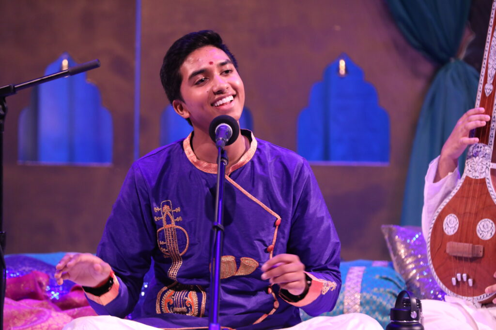

The Kural Koodal Semmozhi Foundation America is a non-profit organization based in Houston, TX, U.S., dedicated to promoting the Thirukkural, an ancient Tamil literary work containing 1,330 couplets written by the great poet Thiruvalluvar over 2,000 years ago.
Although the Thirukkural is an ancient piece of Tamil literature, we believe that many of the teachings can still be applicable today. Thiruvalluvar's Thirukkurals have been translated into over 40+ world languages. Our organization aims to spread the Thirukkural in the form of catchy classical tunes to be admired around the world.
We hope to inspire the classical arts, in both dance and vocal, and most of all, we hope to inspire education.
We have recorded all 133 athigarams (chapters) set to unique ragas, featuring over 100 ragas designed to capture the appropriate emotional context (bhavam) for each chapter. The album is available on all major streaming platforms.

Singer
Composer & Mixing Engineer